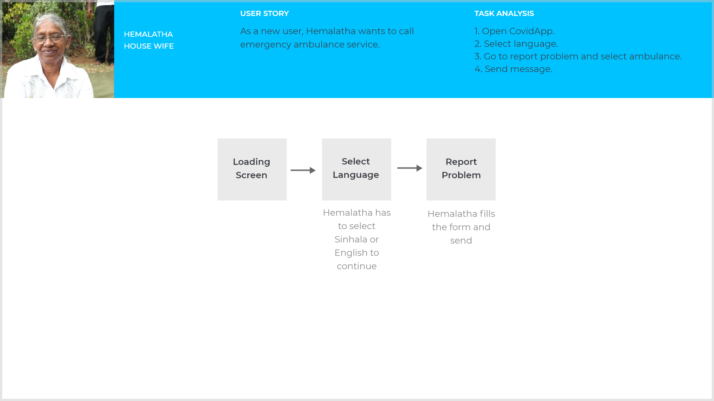

Project
CovidApp is a shopping and medical assitance application that i created as my first ui / ux Project. As sole ux designer, I designed this project from inception to final design through research, ideation and and ux design principles.
Duration: 2 months
Methods: Surveys, Wireframes, Prototyping.
Tools: Adobe XD, Figma, Balsamiq, Photoshop.
Context
Living with Corona virus become more challangable to the humans these days. In order for people stay in safe during pandemic, they have to use new ways to buy items and using health services rather than visit grocery stores or go to hospital.
However using a comlplex mobile app may difficult for senior generation in our country. Therefore I created this app with our native language and English. Also with simple design.
The Process
Research
Competitor Analysis
To get better understanding of the competitor landscape, I conducted analysis of popular shopping and health services apps on the market. And found pros and cons of that apps. Also found user must register to some health service apps to get emergency services like call an ambulance.
Surveys & Interviews
With the goal of understanding how users made use of existing shopping and medical services apps, which features they thought were most important, and the issues they were facing, I surveyed 5 users with with different educational background, age, profession and health. I want to understand how the users answers would vary depending on their skill level, So I separated my findings with native speaker and english speaker.
User Stories
Finally I created user stories that I could use to better understand the potential needs of users, to help decide functional requirements for CovidApp, and that i could refer back to throughout the project to keep focused.
Define
Problem Statement
Users of every skill need a way to find easily understandable, safe and reliable method to buying items and getting health services.
User Personas
Since one of the key findings from my user research was the fact that users have different needs, two user personas were created. I revisited those user personas in order to remind myself of the needs and frustrations of my users and maintain a user centric focus for the duration of the project.
User Flows & Task Analysis
Finally, I created a task alaysis and user flow for each persona. This gave me a clear picture of the steps that the user would need to their final goal, and how to deliver this goal in the most effective manner possible.


Core Features
With a better idea of my user and their needs, I identified three core features that i wanted to focus for the product.
Search And Browse
Language Selection
Leave Review
Ideate
Low Fidelity Wireframes
Since simplicity and ease of use are one of the biggest aims of CovidApp, the number of screens were kept to a minimum and I wanted to focus on highlighting the core features. I started with pen and paper wireframes and created multiple versions of each screen until I found a combination of features and elements that I thought matched the users needs and that would be as intuitivee as much as possible.
Next, I created mid-fidelity versions of these wireframes in Adobe XD, created a clickable prototype, and found some users to test the app.
Test
Usability Testing
This phase was the game changer - by conducting usability tests, I was able to refine what users were finding useful, and completly changeup what they didnt react well to. The users were asked complete a few scenario based tasks thst would test the main features of the app, and were asked how they felt about app in general.
Key Findings
I made notes of the positive and negative feedback, so that i knew what areas to keep expanding upon and what needed to be rewoked.
Positive
- Users were able to complete tasks quickly.
- Users like language selection option.
Negative
- Senior users were confused with using the app.
- Users found app need more navigation.
Iterate
Design Changes
I made changes based on the user feedback and then reached out for additional feedback from some designers. I created newer high fidelity version of the app that featured larger icons and clearer text.
Final Product
After many tests and iterations, my final product aligned with all of the objectives i had set in place. It includes the language selection and users can take emegency services without login, while appearing vissually appealing and simple to use.
Click here to view final prototype.
View project in behance.